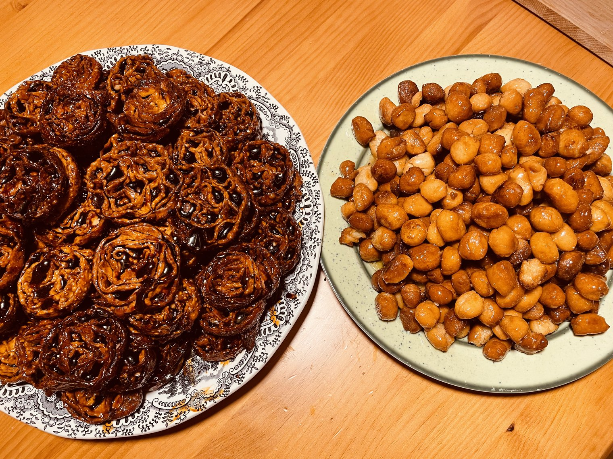

Sannacchiudere
Ingredienti
×
- 500 g di farina
- 2 uova
- 100 g di zucchero
- 100 g di olio
- 1 pizzico di sale
- 1 bicchierino (chupito) di liquore all'anice
- 1 arancia
- 0.5 l di miele
- mandorle abbrustolite

Preparazione
Passo 1
Impastare tutto: 500 g di farina, 2 uova, 100 g di zucchero, 100 g di olio, 1 pizzico di sale, 1 bicchierino (chupito) di liquore all'anice, la spremuta e la buccia grattugiata di 1 arancia. La pasta deve venire non molto morbida (come per i ravioli).
Passo 2
Far riposare 30min. Una volta impastata, non lavorarla più perché si arrabbia.
Passo 3
Fare dei serpenti grossi come un dito, tagliarli a pezzetti (palline) e schiacciarli sulla grattugia. Lasciarli riposare tutta la notte: così si asciugano e prendono meglio il sapore.
Passo 4
Friggerli. Quando sono freddi, metterli nel miele.
Passo 5
Scaldare 0.5 l di miele nella pentola (senza farlo bollire), spegnere e buttarci i sannacchiudere. Aggiungere mandorle abbrustolite.
Riepilogo
500 g di farina
2 uova
100 g di zucchero
100 g di olio
1 pizzico di sale
1 bicchierino (chupito) di liquore all'anice
1 arancia
Impastare
riposare
schiacciarli
Friggerli
0.5 l di miele
mandorle abbrustolite
Scaldare